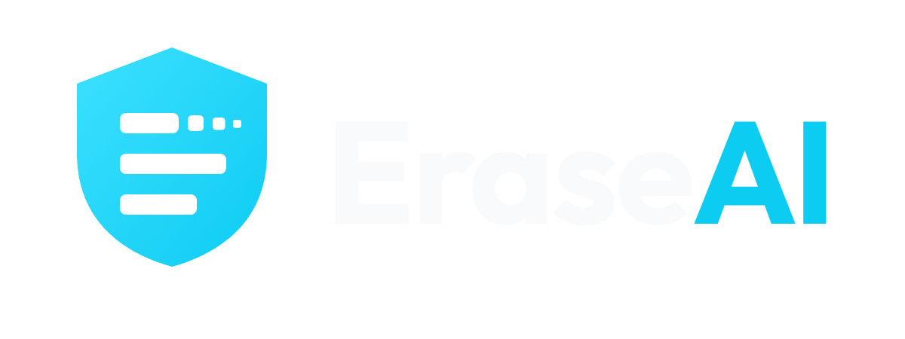

EraseAI Firewall checks what your people are about to send to ChatGPT, Claude or Gemini, on the device by default, with no proxy in the middle.
Rely on memory at the worst moment: a deadline, a clipboard and a chat box.
See traffic after the fact, and have to sit in the middle of it.
The right place. A handful of browser extensions do it. It is not yet a company-grade control.
Every message, on the device by default, before it goes. On paid plans, attached files too: PDF, Word, Excel, slides and screenshots are read in the browser.
If it finds personal data, card numbers, passwords or API keys, it stops and shows what and where.
Cancel or Send Anyway. On paid plans, Sanitize & Send swaps the sensitive values for labels, or you download a clean copy of the file. A person always has the last word.
ChatGPT, Claude, Gemini and Replit. Free checks run on the device. Paid plans also read attachments in the browser (PDF, Word, Excel, slides, images) and offer a clean copy.
A send gate inside the AI apps you choose. Not a VPN.
Invite people, see an audit log of decisions (level, action, category), never the text anyone typed.
Scan the text going into and out of your own AI application.
US$9 per person per month (US$8 on annual), 3 to 10 people, self-serve.
By seat, by invoice, with central policy, single sign-on and audit export.
AI implementers and system integrators ship the check inside the AI work they deliver, through the Developer API and managed rollout.
| Year 1 | Year 2 | Year 3 | Year 4 | Year 5 | |
|---|---|---|---|---|---|
| Year-end ARR (S$) | 40k | 0.29M | 1.4M | 4.1M | 9.5M |
| Seats | 353 | 2,617 | 12,293 | 37,296 | 85,585 |
| Team | 7 | 13 | 20 | 27 | 32 |
| Raised in the year (S$) | 1.0M | 3.0M | 5.0M | – | – |
Work with phone makers so the send-point check ships in device software.
Bring your own model keys, the firewall built in, remember or forget each chat, delete any history.
The same decision records as evidence for sector regulators and national programmes.